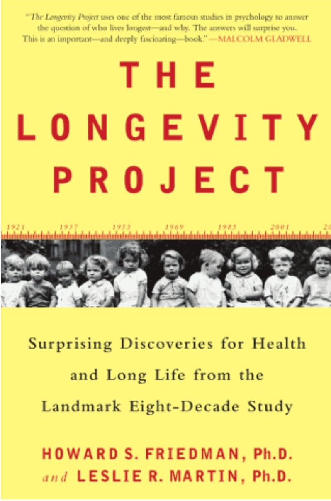
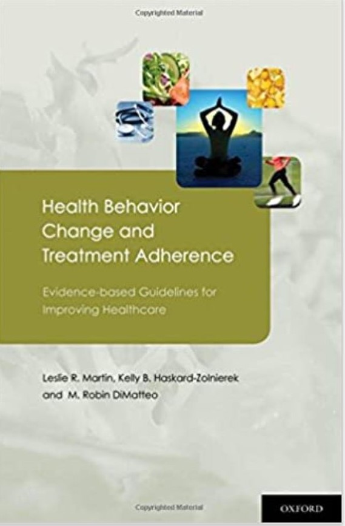
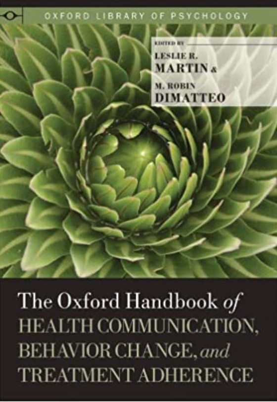

.jpg)


"…having people there to encourage you, when your own motivation is flagging, and who can celebrate with you when things go well and you’ve had a victory… that in itself is very rewarding."
“This very simple model, I’m convinced, can do a lot to help us be better partners and to maybe help us reclaim majority ownership in our own well-being.”

“There’s a huge myth that’s out there which is that if you want to live a long life, you need a long checklist of do’s and don’ts, so all the right foods to eat, all the foods that you should never eat, all of the exercises that you need to do even if you hate them, and the Longevity Project is really a myth buster.”
“Probably the most surprising thing to me in the Longevity Project was the differences that we found for men versus women when they encountered divorce. Divorce certainly is stressful and a bad thing for anyone, but men we really able to improve their odds and ameliorate their rist by getting remarried after a divorce. That wasn’t really so much the case for women. Women were just about as well-off if they stayed single following divorce.”>

